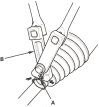
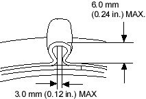
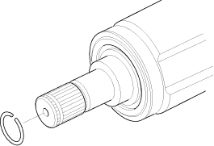

- Close the ear portion (A) of the band with a commercially available boot band pincers (B).

- Check the clearance between the closed ear portion of the band. If the clearance is not within the standard, close the ear portion of the band further.

- Install the new set ring.
